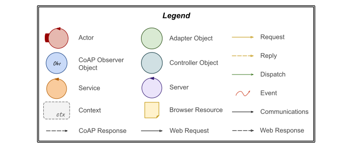
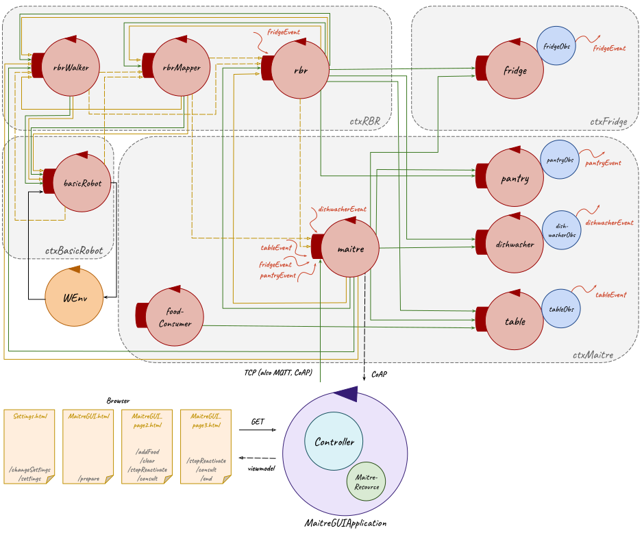

| Machine Understandable Architecture Model | A Possible Graphic Representation |
|---|---|
|
Sprint 3 model.qak |

 |
| Machine Understandable Architecture Model | A Possible Graphic Representation |
|---|---|
|
maitreNode model.qak rbrNode model.qak fridgeNode model.qak |
|
// 1. created the distribution of this project gradle -b build_ctxfridge.gradle build // 2. created the image using Dockerfile docker build -f Dockerfile -t fridgenode:1.1 . // 3. runned the image only to test it docker run -d --name fridgenode -p 8060:8060/tcp -p 8060:8060/udp fridgenode:1.1 // 4. tagged the image docker tag fridgenode:1.1 bluffgnuff/fridgenode:1.1 // 5. registered the image on DockerHub docker push bluffgnuff/fridgenode:1.1To launch fridgeNode, for which it has been created the fridgenode.yaml file, in a terminal containing this file it should run:
docker-compose -f fridgenode.yaml up
// 1. created the distribution of this project gradle -b build_ctxmaitre.gradle build // 2. created the image using Dockerfile docker build -f Dockerfile -t maitrenode:1.1 . // 3. runned the image only to test it docker run -d --name maitrenode -p 8070:8070/tcp -p 8070:8070/udp maitrenode:1.1 // 4. tagged the image docker tag maitrenode:1.1 bluffgnuff/maitrenode:1.1 // 5. registered the image on DockerHub docker push bluffgnuff/maitrenode:1.1To launch maitreNode, for which it has been created the maitrenode.yaml file, in a terminal containing this file it should run:
docker-compose -f maitrenode.yaml up
// 1. created the distribution of this project gradle -b build.gradle.kts build // 2. created the image using Dockerfile docker build -f Dockerfile -t maitregui:1.1 . // 3. runned the image only to test it docker run -d --name maitregui -p 8081:8081/tcp -p 8081:8081/udp maitregui:1.1 // 4. tagged the image docker tag maitregui:1.1 bluffgnuff/maitregui:1.1 // 5. registered the image on DockerHub docker push bluffgnuff/maitregui:1.1To launch maitreGUI, for which it has been created the maitreGui.yaml file, in a terminal containing this file it should run:
docker-compose -f maitreGui.yaml up
docker-compose -f maitre.yaml up
// 1. saved the basicrobotMbot.yaml file, provided by the customer, on the Raspberry scp ./basicrobotMbot.yaml pi@192.168.1.93:/home/pi/basicrobotMbot.yaml // 2. runned the container in basicrobotMbot.yaml file folder docker-compose -f basicrobotMbot.yaml run --service-ports mbot ./it.unibo.qak21.basicrobot // 3. configured the correct json file (basicrobotConfigForNano.json) docker exec -itimageforarm-mbot-1 mv basicrobotConfigForNano.json basicrobotConfig.json // 4. setted the container to start at Raspberry boot docker update --restart alwaysimageforarm-mbot-1 // whereimageforarm-mbot-1 is theCONTAINER NAME , which can be found running in any terminal: docker ps -a
// 1. created the distribution of this project gradle -b build_ctxrbr.gradle build // 2. created the image using DockerfileOnRasp docker build -f DockerfileOnRasp -t rbrnode_on_rasp:1.1 . // 3. runned the image only to test it docker run -d --name rbrnode_on_rasp -p 8050:8050/tcp -p 8050:8050/udp rbrnode_on_rasp:1.1 // 4. tagged the image docker tag rbrnode_on_rasp:1.1 bluffgnuff/rbrnode_on_rasp:1.1 // 5. registered the image on DockerHub docker push bluffgnuff/rbrnode_on_rasp:1.1 // 6. created the rbrnodeOnRasp.yaml file and saved it on the Raspberry scp ./rbrnodeOnRasp.yaml pi@192.168.1.93:/home/pi/rbrnodeOnRasp.yaml // 7. runned the container in rbrnodeOnRasp.yaml file folder docker-compose -f rbrnodeOnRasp.yaml up // 8. setted the container to start at Raspberry boot docker update --restart alwaysrbrnode_on_rasp-context-1 // whererbrnode_on_rasp-context-1 is theCONTAINER NAME , which can be found running in any terminal: docker ps -a
// 1. save the rbrnodeAndBasic.yaml file, provided by the customer, on the Raspberry scp ./rbrnodeAndBasic.yaml pi@192.168.1.93:/home/pi/rbrnodeAndBasic.yaml // 2. run the container in rbrnodeAndBasic.yaml file folder docker-compose -f rbrnodeAndBasic.yaml up // 3. configure the correct json file (basicrobotConfigForNano.json) docker exec -itpi-mbot-1 mv basicrobotConfigForNano.json basicrobotConfig.json // 4. set the containers to start at Raspberry boot docker update --restart alwayspi-mbot-1 docker update --restart alwayspi-context-1 // wherepi-mbot-1 andpi-context-1 are theCONTAINER NAMES , which can be found running in any terminal: docker ps -a
// 1. created the distribution of this project gradle -b build_ctxrbr.gradle build // 2. created the image using DockerfileOnPc docker build -f DockerfileOnPC-t rbrnode_on_pc:1.1 . // 3. runned the image only to test it docker run -d --name rbrnode_on_pc -p 8050:8050/tcp -p 8050:8050/udp rbrnode_on_pc:1.1 // 4. tagged the image docker tag rbrnode_on_pc:1.1 bluffgnuff/rbrnode_on_pc:1.1 // 5. registered the image on DockerHub docker push bluffgnuff/rbrnode_on_pc:1.1To launch rbrNode, for which it has been created the rbrnodeOnPc.yaml file, in a terminal containing this file it should run:
docker-compose -f rbrnodeOnPc.yaml up
| Machine Understandable Architecture Model | A Possible Graphic Representation |
|---|---|
|
Sprint 4 maitreNode model.qak Sprint 4 rbrNode model.qak Sprint 4 fridgeNode model.qak |
|
docker-compose -f fridgenode.yaml upTo launch the containers related to the maitreNode and to the maitreGUI projects it must be run in a terminal (in the folder containing the maitre.yaml file):
docker-compose -f maitre.yaml up
docker startwhereCONTAINER_NAME
docker ps -aInstead, to stop it:
docker stopCONTAINER_NAME
docker-compose -f System_local.yaml up